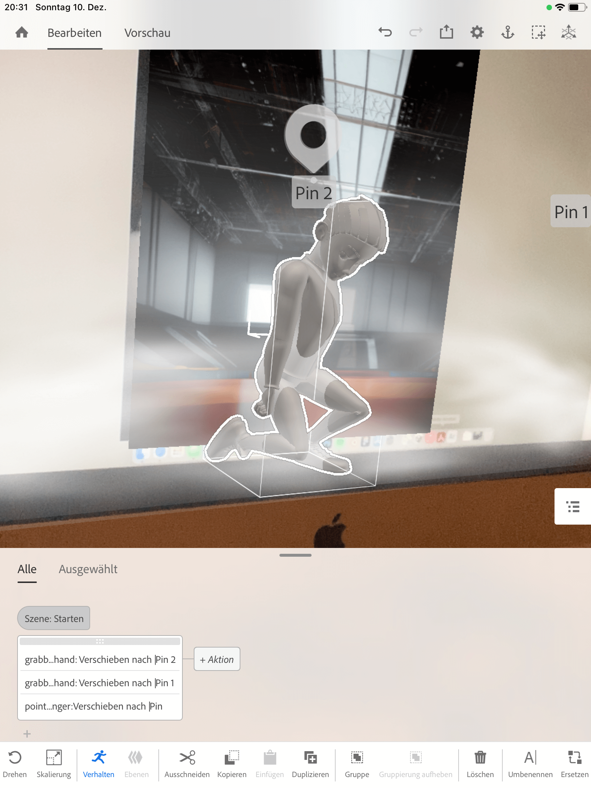
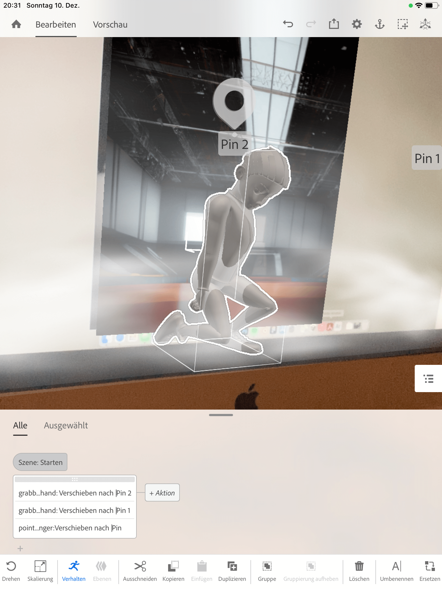

Hardfacts
Zeitraum: Oktober 2024 - Februar 2025
Kontext: Kursprojekt an der Fachhochschule Potsdam
Projektentwicklung
Ausgangssituation
Dieses Projekt entstand im Kurs New Realities unter der Leitung von Interfacedesigner und Künstler Moritz Jekat. Ziel war es, eine visuelle Welt zu gestalten, die ein Gefühl, ein Empfinden oder ein Ereignis nachvollziehbar macht – auf künstlerische, experimentelle Weise.
Im Gegensatz zu meinen anderen Projekten stand hier nicht die Funktionalität oder Nutzerführung im Vordergrund, sondern die emotionale Wirkung und Ausdruckskraft der Bildwelt. Die Aufgabenstellung war bewusst offen gehalten und bot viel Raum für Interpretation, Recherche und freie gestalterische Entscheidungen.


Erstes Konzept
Oberthema ist Leistungsdruck m Sport. Endprodukt wird ein Plakat, vorzugsweise aber eine Plakatserie sein, die verschiedene Geschichten von Kindern im (Leistungs)sport erzählt. Die Geschichten schauen hinter die Facette und zeigen das, was für einen neut- ralen Betrachter nicht sichtbar ist.
Grundlegendes Konzept
Als Endprojekt soll mindestens ein Plakat entstehen, vorzugsweise aber eine Plakatrei- he von 3 Designs. Die Plakate beschäftigen sich mit den psychischen Auswirkungen von Leistungsdruck im Sport bei Kindern und Jugendlichen.
Die Motive/ Bildwelten werden in 3D gebaut. Ich werde viel mit Sinnbilden undÜber- treibungen arbeiten, ähnlich wie in Karrikaturen. Der Stil ist aber völlig anders (siehe Moodboard bei Milanote). Das besondere an meinen Bildern ist aber, dass man sie ab- scannen kann und mithilfe von AR die Geschichte, die in den einzelnen Postern erzählt wird, eine neue Dimension bekommt. Das heißt, dass zum Beispiel das Bild einfach erweitert und ausgeschmückt wird oder aber auch, dass ein neuer Aspekt in die Szene eingeführt wird, die Situation in ein ganz neues Licht rückt.
Visuelles Konzept
Die Plakate werden komplett in Blender gebaut und sollen nicht fotorealistisch sein. Zwar soll die Thematik in die reale Welt übernommen werden, das soll aber durch die Verwendung von AR geschehen. Für die einzelnen Objekte habe ich mir jetzt erstmal überlegt, diese in der „typischen“ 3D/ Blender Obtik zu machen (wie in Abbildungen 1 und 2). Zumal erspart es etwas zeit auf der anderen Seite sind diese plastischen Ober- flächen so perfekt, dass sie als Sinnbild verwendet werden können und man sie in der VR Welt geziehlt aufbrechen kann.
 
